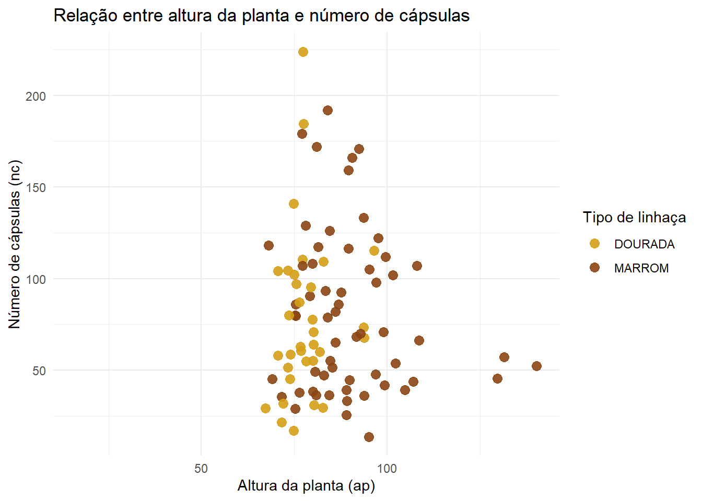
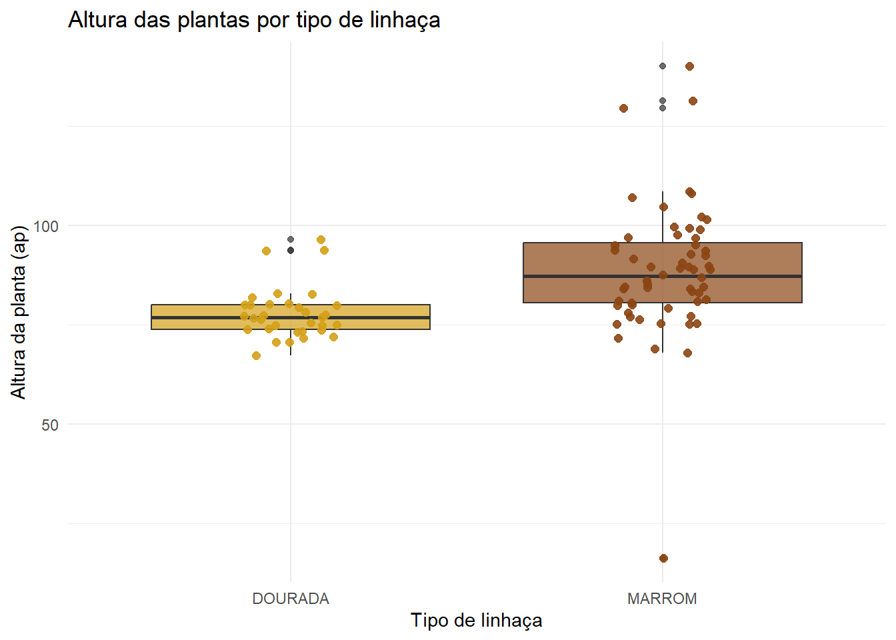
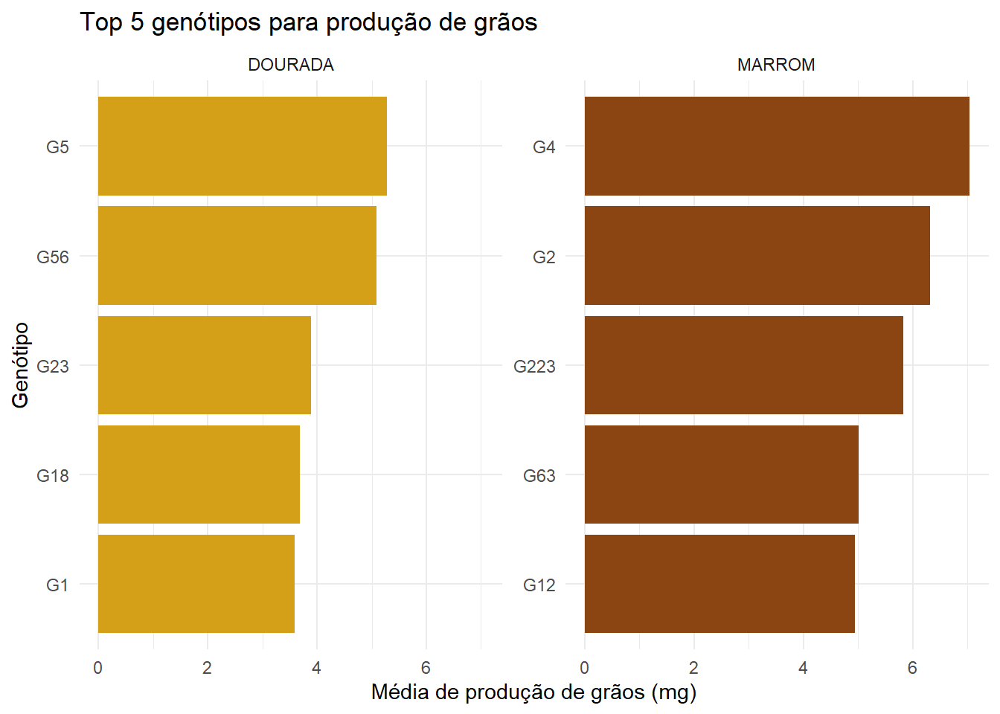
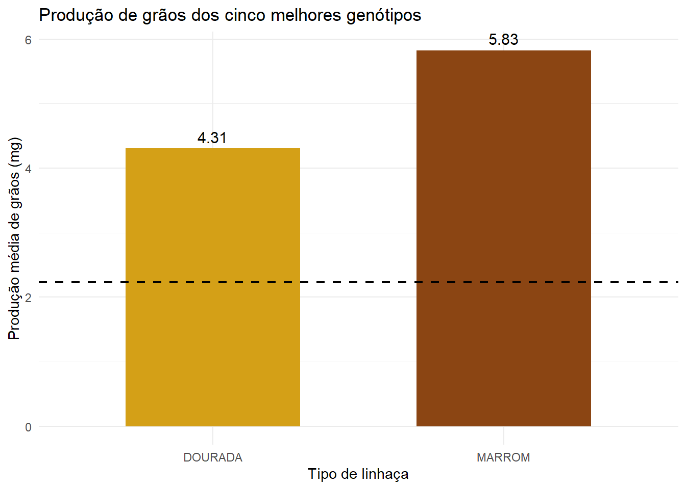

library("rio")Warning: pacote 'rio' foi compilado no R versão 4.5.3library(tidyverse)Warning: pacote 'tidyverse' foi compilado no R versão 4.5.3Warning: pacote 'ggplot2' foi compilado no R versão 4.5.3Warning: pacote 'tidyr' foi compilado no R versão 4.5.3Warning: pacote 'readr' foi compilado no R versão 4.5.3Warning: pacote 'purrr' foi compilado no R versão 4.5.3Warning: pacote 'forcats' foi compilado no R versão 4.5.3Warning: pacote 'lubridate' foi compilado no R versão 4.5.3── Attaching core tidyverse packages ──────────────────────── tidyverse 2.0.0 ──
✔ dplyr 1.2.0 ✔ readr 2.2.0
✔ forcats 1.0.1 ✔ stringr 1.6.0
✔ ggplot2 4.0.2 ✔ tibble 3.3.1
✔ lubridate 1.9.5 ✔ tidyr 1.3.2
✔ purrr 1.2.2
── Conflicts ────────────────────────────────────────── tidyverse_conflicts() ──
✖ dplyr::filter() masks stats::filter()
✖ dplyr::lag() masks stats::lag()
ℹ Use the conflicted package (<http://conflicted.r-lib.org/>) to force all conflicts to become errorsgenotipos_final <- import("genotipo_final.xlsx")
top5_genotipos <- import("top5_genotipos.xlsx")
# Como a altura da planta se relaciona com o número de cápsulas?
ggplot(genotipos_final, aes(x = ap, y = nc, color = tipo)) +
geom_point(size = 3, alpha = 0.9) +
scale_color_manual(
values = c(
"DOURADA" = "#D4A017",
"MARROM" = "#8B4513"
)
) +
labs(
title = "Relação entre altura da planta e número de cápsulas",
x = "Altura da planta (ap)",
y = "Número de cápsulas (nc)",
color = "Tipo de linhaça"
) +
theme_minimal()Warning: Removed 28 rows containing missing values or values outside the scale range
(`geom_point()`).
# Comparação da altura entre tipos: MARROM e DOURADA
ggplot(genotipos_final, aes(x = tipo, y = ap, fill = tipo)) +
geom_boxplot(alpha = 0.7) +
geom_jitter(aes(color = tipo), width = 0.13, size = 2, alpha = 0.9) +
scale_fill_manual(
values = c(
"DOURADA" = "#D4A017",
"MARROM" = "#8B4513"
)
) +
scale_color_manual(
values = c(
"DOURADA" = "#D4A017",
"MARROM" = "#8B4513"
)
) +
labs(
title = "Altura das plantas por tipo de linhaça",
x = "Tipo de linhaça",
y = "Altura da planta (ap)"
) +
theme_minimal() +
theme(legend.position = "none")Warning: Removed 27 rows containing non-finite outside the scale range
(`stat_boxplot()`).Warning: Removed 27 rows containing missing values or values outside the scale range
(`geom_point()`).
# Os 5 principais genótipos para produção de grãos (mg)
top5_genotipos <-
genotipos_final |>
group_by(tipo) |>
slice_max(
order_by = mg,
n = 5,
with_ties = FALSE
) |>
ungroup()
### ggplot
ggplot(top5_genotipos,
aes(x = reorder(gen, mg), y = mg, fill = tipo)) +
geom_col() +
scale_fill_manual(
values = c(
"DOURADA" = "#D4A017",
"MARROM" = "#8B4513"
)
) +
coord_flip() +
facet_wrap(~ tipo, scales = "free_y") +
labs(
title = "Top 5 genótipos para produção de grãos",
x = "Genótipo",
y = "Média de produção de grãos (mg)"
) +
theme_minimal() +
theme(legend.position = "none")
# Diferença da média geral e a média dos top 5 genótipos
dif_selecao <- genotipos_final |>
group_by(tipo) |>
summarise(
media_geral = mean(mg, na.rm = TRUE),
media_top5 = mean(top5_genotipos$mg[
top5_genotipos$tipo == first(tipo)
], na.rm = TRUE),
diferencial = media_top5 - media_geral,
.groups = "drop"
)
media_geral <- mean(genotipos_final$mg, na.rm = TRUE)
## ggplot
ggplot(dif_selecao,
aes(x = tipo, y = media_top5, fill = tipo)) +
geom_col(width = 0.6) +
geom_hline(
yintercept = mean(genotipos_final$mg, na.rm = TRUE),
color = "black",
linetype = "dashed",
linewidth = 0.8
) +
scale_fill_manual(
values = c(
"DOURADA" = "#D4A017",
"MARROM" = "#8B4513"
)
) +
geom_text(
aes(label = round(media_top5, 2)),
vjust = -0.5,
size = 4
) +
labs(
title = "Produção de grãos dos cinco melhores genótipos",
x = "Tipo de linhaça",
y = "Produção média de grãos (mg)"
) +
theme_minimal() +
theme(legend.position = "none")